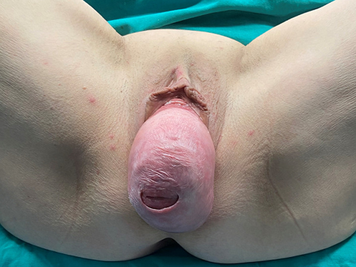

Página 3 · Prolapsos / distopia genital
Colo longo não é útero descendo
Colo longo não é útero descendo. O colo aparecer embaixo não prova que o útero desceu — a régua dos 4 cm separa os dois.
O erro clássico: operar um “útero descendo” que era só colo comprido
Há uma confusão que a banca adora e que o residente erra: tomar um colo simplesmente comprido por um prolapso uterino. Não é uma confusão rara nem teórica — aconteceu de verdade, num serviço em que uma cirurgia chegou a ser suspensa por ser “só um colo longo” e, ainda assim, por falta de supervisão, a paciente acabou operada. O colo aparecer lá embaixo no exame não prova que o útero desceu. Antes de indicar qualquer coisa, é preciso responder: foi o útero que desceu, ou só o colo que é comprido demais?
A régua dos 4 cm: a medida é do exame físico, não da ultrassonografia
O que define o alongamento hipertrófico do colo é uma medida: a distância do fundo da vagina até a ponta do colo (o orifício externo). Acima de 4 cm, é colo longo — alongamento. E há um detalhe que a banca esconde: essa medida é feita no exame físico, não na ultrassonografia. A medida de colo por USG pertence a outro contexto (o obstétrico, na gestação); aqui, quem mede o colo alongado são as mãos e o espéculo. Trocar o exame físico pela USG é errar a pergunta.
No prolapso verdadeiro desce tudo junto; no alongamento só o colo
A chave do diferencial é a mesma solidariedade ligamentar do mapa. No prolapso uterino verdadeiro, o útero desce e leva o fundo da vagina junto — porque está preso nos ligamentos. No alongamento, o útero está em posição normal e o fundo da vagina fica lá em cima, bonitinho; só o colo é que se estica e aparece embaixo. Confirma-se no exame: passa-se o espéculo e vê-se um colo vindo até bem baixo, mas o fundo da vagina está no alto — e ao toque já se percebe. Colo embaixo com fundo em cima = alongamento; tudo descido junto = prolapso verdadeiro.
Tratamento diferente: não se retira o útero por um colo longo
A razão de todo esse cuidado é que o tratamento é diferente. Resolver um alongamento não exige retirar o útero — não se faz histerectomia por um colo comprido. A cirurgia certa para o colo longo é bem mais econômica (a amputação parcial do colo, que reaparece adiante). Confundir os dois quadros custa um útero a mais no centro cirúrgico.
Existem graus e tipos — a semente do estadiamento
Por fim, um prolapso não é uma coisa só: existem graus diferentes e tipos diferentes, e por isso tratamentos diferentes. Um útero todo exteriorizado já é um prolapso total; mas há graus menores, deslocamentos pequenos que talvez nem se operem. Medir esse “quanto desceu” com precisão é justamente o trabalho do POP-Q — a régua que gradua o degrau e que estadia de 1 a 4.

Prolapso uterino completo com eversão vaginal — o colo/útero no polo mais distal (o óstio externo como fenda na ponta). É o oposto do alongamento: aqui desceu tudo junto, não só o colo.
Thanasa A et al. “Total uterine prolapse.” Pan Afr Med J. 2023;44:57 (Fig. 1), via PubMed Central. Licenciado sob CC BY 4.0. Fonte: PMC.
real de achado — procidência uterina (apical), distinta da cistoceleMapa do assoalhoA coluna apical do mapa — ligamentos cardinais e útero-sacros — é o que faz “descer tudo junto” no prolapso verdadeiro. A régua dos 4 cm reaparece como |D − C| > 4 dentro do POP-Q.
Quiz — fixação
Ao exame, o colo aparece a poucos centímetros do intróito, mas o fundo da vagina está no alto e o útero em posição normal. A medida fundo da vagina → orifício externo é de 5 cm. O diagnóstico e a conduta são:
- B — a virada. Fundo da vagina no alto + útero normal + medida > 4 cm = colo comprido isolado = alongamento → correção econômica que preserva o útero.
- A. o prolapso verdadeiro desceria tudo junto (fundo da vagina também) — aqui o fundo está em cima, e histerectomizar seria retirar um útero sadio à toa.
- C. cúpula é de quem não tem útero; a paciente tem útero em posição normal.
- D. cistocele é parede anterior/bexiga — nada a ver com colo longo.
- Por que cair. ver o colo embaixo e disparar “útero desceu” é exatamente o erro que já levou paciente ao centro cirúrgico.
Sobre a medida que define o alongamento hipertrófico do colo, é correto afirmar:
- B — a virada. A régua dos 4 cm é clínica (exame físico), não ultrassonográfica.
- A. a medida de colo por USG é obstétrica/gestacional — contexto diferente; trocar os dois é a pegadinha.
- C. inventa um plano que não existe no exame de distopia.
- D. falso e perigoso: o tratamento é diferente (o alongamento preserva o útero) — é justamente por isso que a distinção importa.
- Por que cair. “medir o colo” evoca a USG obstétrica na memória, mas aqui a régua é das mãos.
Cravado que o útero realmente desceu, a pergunta vira cirúrgica: tira-se o útero ou salva-se — e a resposta depende do tamanho do prolapso e do desejo da paciente.